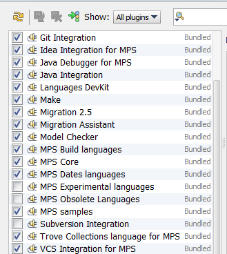

The Plugin Manager configuration dialog allows you to tune the set of plugins and languages that MPS will load and use. If some of the plugins or languages are not needed for your current tasks, you can switch them off and thus increase the performance of the platform.
